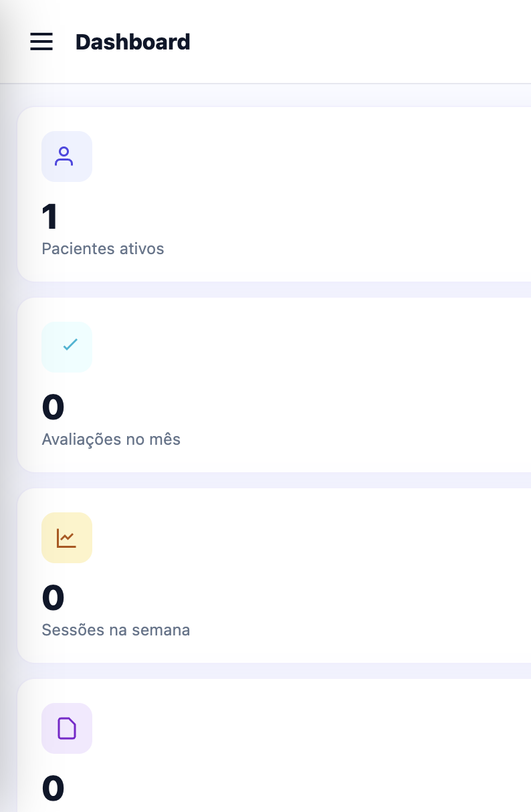
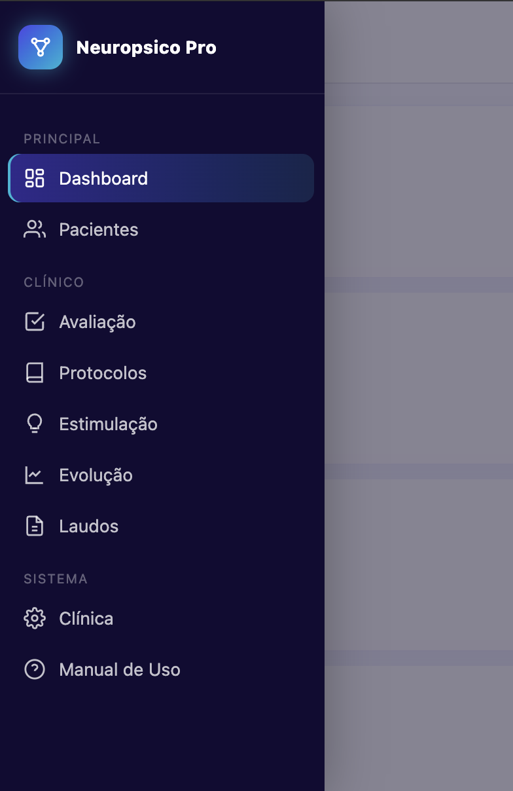
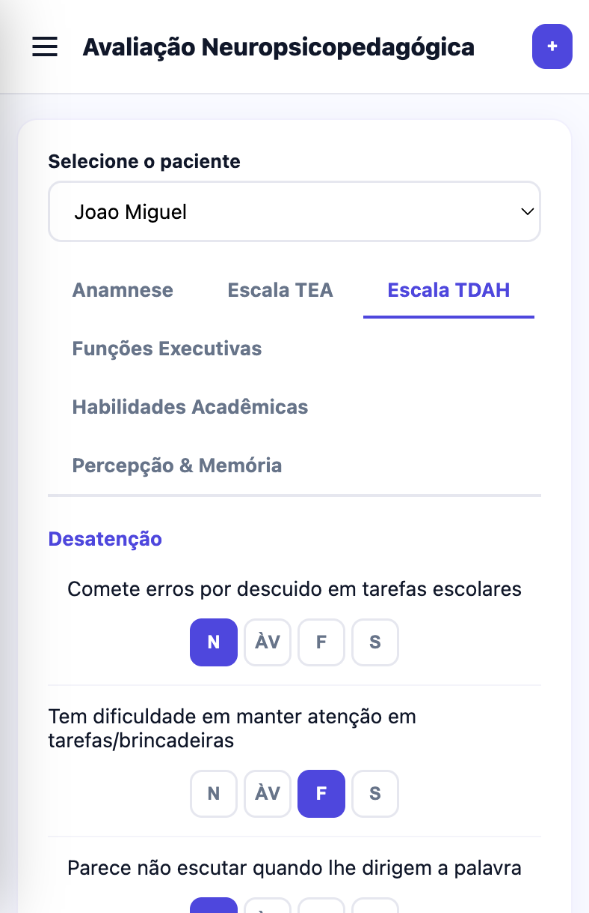
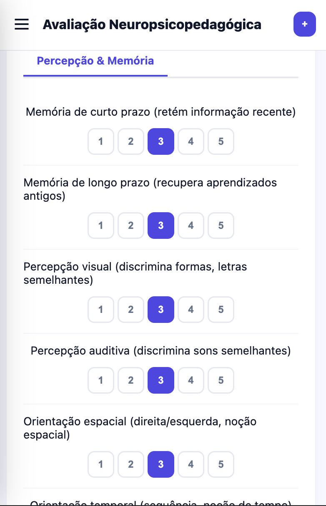
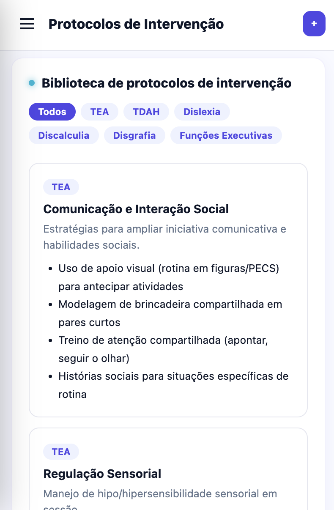
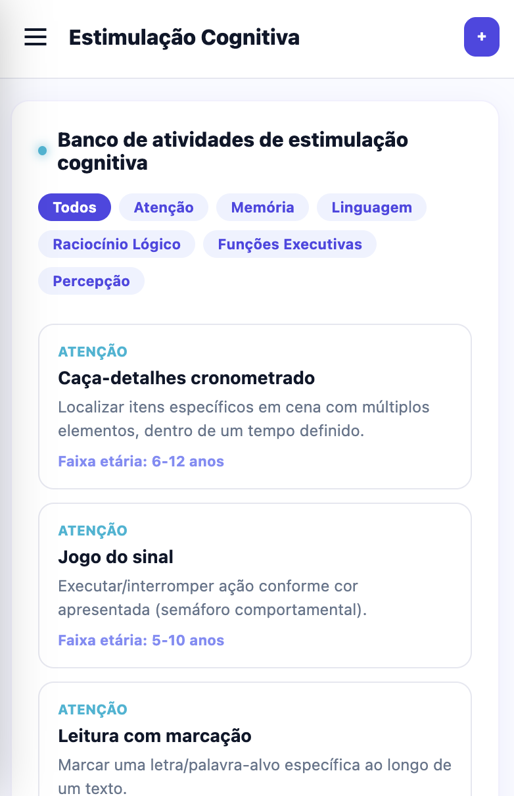
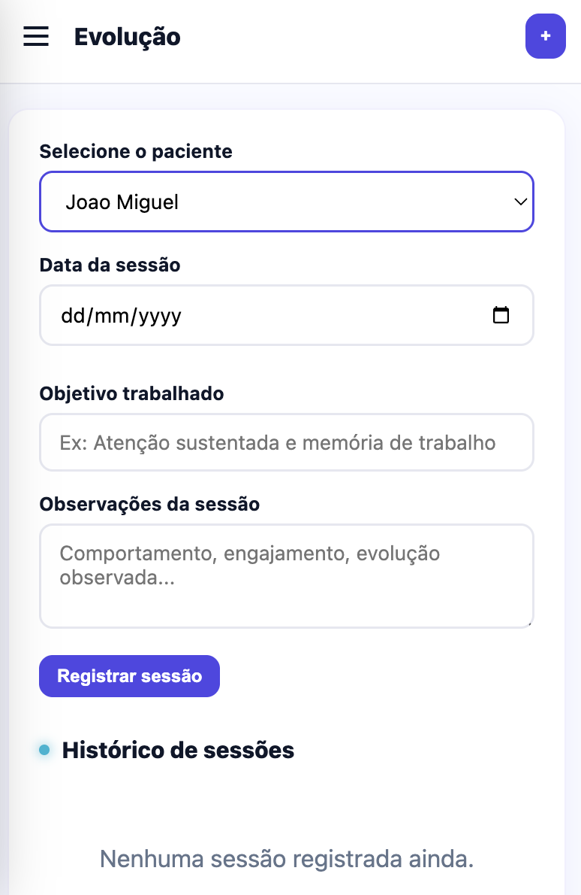
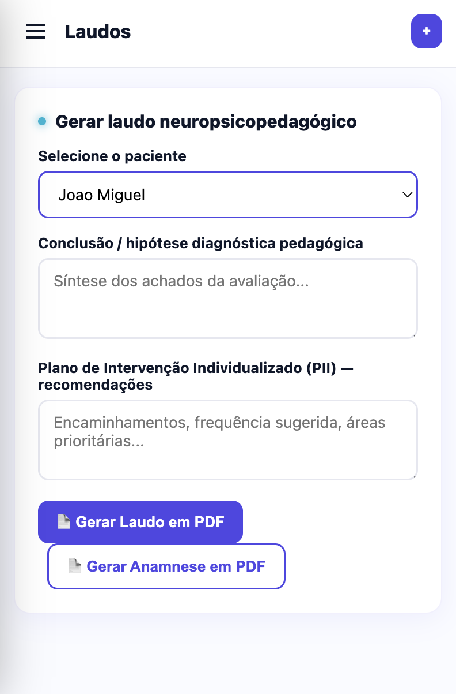

Anamnese, Escala TEA, Escala TDAH, Funções Executivas, protocolos de intervenção e laudo em PDF — tudo pronto para usar com seus pacientes hoje mesmo.
Quero Acesso Agora →Em um único app. Pronto para usar em qualquer sessão.
Histórico gestacional, desenvolvimento, escolar e familiar já estruturado por seções.
Rastreio de comunicação social e comportamentos/interesses restritos, item a item.
Desatenção, hiperatividade e impulsividade organizados por domínio clínico.
Memória de trabalho, flexibilidade cognitiva, controle inibitório e planejamento.
Estratégias de intervenção por área: TEA, TDAH, dislexia, discalculia, disgrafia.
Estimulação cognitiva filtrável por função e faixa etária, pronta pra sessão.
Histórico de sessões organizado automaticamente, sem caderno solto.
Gera o laudo neuropsicopedagógico com seus dados profissionais em segundos.

Visão geral em segundos.Pacientes, avaliações e laudos organizados num só painel — sem abrir 5 abas diferentes pra saber onde você parou.

Tudo a um toque.Avaliação, protocolos, estimulação e laudos organizados num único menu, pensado pra fluir durante o atendimento.

Sem decorar critério nenhum.A Escala TDAH guia você item por item, direto na sessão, com o paciente na sua frente.

Avaliação pronta, sem montar do zero.Memória e percepção com escala estruturada em cada novo atendimento.

Não sabe por onde começar?Escolha a área e o protocolo completo de intervenção aparece na hora, pronto pra aplicar.

Chega de pesquisar atividade na véspera.Banco de atividades prontas, filtradas por função cognitiva e faixa etária.

Nunca mais perca o histórico.Cada sessão registrada automaticamente — sem caderno solto, sem esquecer o que já foi trabalhado.

Laudo pronto em segundos.Já sai em PDF com seus dados profissionais no cabeçalho, pronto pra entregar.
"Antes eu montava cada laudo do zero, gastava horas. Agora é só preencher a avaliação e gerar o PDF."
"Os protocolos prontos me deram segurança pra estruturar a intervenção logo na primeira sessão."
"Vale muito mais do que paguei. Uso as escalas TEA e TDAH em praticamente toda avaliação nova."
Sem mensalidade. Sem renovação. Paga uma vez e usa para sempre.
Se por qualquer motivo o app não for pra você, é só pedir reembolso em até 7 dias. Sem perguntas, sem burocracia.
Não. É pagamento único e o acesso é vitalício.
Sim, o app funciona direto no navegador do celular ou computador, sem instalar nada.
Ficam salvos no seu próprio dispositivo. Você tem controle total das informações.
O Básico traz o essencial (anamnese + escalas TEA/TDAH). O Profissional libera protocolos completos, banco de atividades e geração de laudo em PDF.
Você tem 7 dias de garantia incondicional — reembolso total, sem perguntas.
Comece a usar o App Neuropsicopedagogo Pro ainda hoje.
Garantir Meu Acesso →